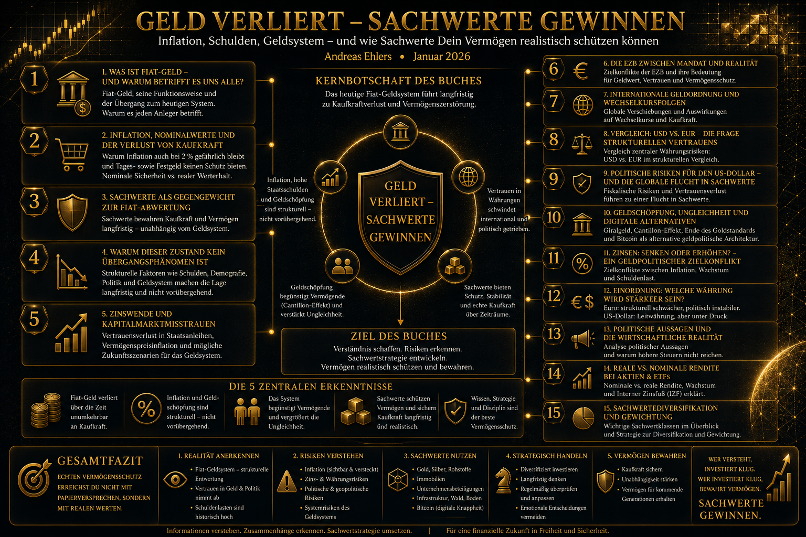

Warum verlieren Geldvermögen an Kaufkraft – selbst in Zeiten scheinbarer Stabilität? Und weshalb gewinnen reale Werte im heutigen Geldsystem zunehmend an Bedeutung?
Über dieses Buch
Dieses Buch ist aus einer einfachen Beobachtung entstanden: Das heutige Geldsystem wirkt nach außen stabiler, als es in seiner Funktionsweise ist. Offizielle Inflationsraten sinken, Leitzinsen werden angepasst, politische Kommunikation vermittelt Normalität. Gleichzeitig nehmen Verschuldung, geldpolitische Eingriffe und die Abhängigkeit staatlicher Haushalte von niedrigen Zinsen weiter zu.
Wer Geld spart, verlässt sich meist auf nominale Versprechen: Kontostände, Zinsen, Garantien. Doch Geld ist kein stabiler Maßstab mehr. In einem Fiat-Geldsystem, das auf stetiger Geldmengenausweitung und politischer Steuerung beruht, verliert Kaufkraft nicht durch Ausnahmeereignisse, sondern durch Struktur. Oft langsam, oft unspektakulär – aber kontinuierlich.
Sachwerte stehen dabei nicht im Mittelpunkt, weil sie „modern“ oder alternativ sind, sondern weil sie ökonomisch folgerichtig sind. Sie sind begrenzt, produktiv oder nutzbar – und damit grundlegend anders positioniert als Geldwerte, die beliebig vermehrt werden können.
Das Buch richtet sich an Privatanleger, die ihr Vermögen realistisch schützen wollen. Nicht gegen das System, sondern innerhalb seiner Regeln. Mit Sachlichkeit, mit Weitblick – und mit Verantwortung für das eigene Kapital.
Buchstruktur im Überblick
Das folgende Schaubild zeigt den Aufbau des Buches und die thematischen Schwerpunkte im Überblick.

Klicken zum Vergrößern
Themen im Buch
Das Buch führt Schritt für Schritt durch die Mechanismen des modernen Geldsystems:
- Was ist Fiat-Geld – und warum betrifft es alle?
- Inflation, Nominalwerte und der Verlust von Kaufkraft
- Sachwerte als Gegengewicht zur Fiat-Abwertung
- Zinswende und Kapitalmarktmisstrauen
- Vermögenspreisinflation – versteckte Geldentwertung
- Die EZB zwischen Mandat und Realität
- USD vs. EUR: Die Frage strukturellen Vertrauens
- Geldschöpfung, Ungleichheit und digitale Alternativen
- Der Cantillon-Effekt: Warum die Reichen zuerst profitieren
- Bitcoin als alternative geldpolitische Architektur
- Gesamtfazit für Privatanleger
Leseprobe
Aus der Einleitung
Dieses Buch ist aus einer einfachen Beobachtung entstanden: Das heutige Geldsystem wirkt nach außen stabiler, als es in seiner Funktionsweise ist. Offizielle Inflationsraten sinken, Leitzinsen werden angepasst, politische Kommunikation vermittelt Normalität. Gleichzeitig nehmen Verschuldung, geldpolitische Eingriffe und die Abhängigkeit staatlicher Haushalte von niedrigen Zinsen weiter zu.
Diese Diskrepanz zwischen Wahrnehmung und Realität ist der Ausgangspunkt dieses Buches.
Wer Geld spart, verlässt sich meist auf nominale Versprechen: Kontostände, Zinsen, Garantien. Doch Geld ist kein stabiler Maßstab mehr. In einem Fiat-Geldsystem, das auf stetiger Geldmengenausweitung und politischer Steuerung beruht, verliert Kaufkraft nicht durch Ausnahmeereignisse, sondern durch Struktur. Oft langsam, oft unspektakulär – aber kontinuierlich.
Dieses Buch will keine kurzfristigen Krisenszenarien zeichnen und keine einfachen Lösungen verkaufen. Es will erklären. Es ordnet ein, wie unser Geldsystem funktioniert, warum Inflation auch bei scheinbar niedrigen Raten relevant bleibt und weshalb klassische Sparformen real häufig keinen Vermögenserhalt leisten. Daraus werden keine pauschalen Handlungsanweisungen abgeleitet, sondern nachvollziehbare Konsequenzen.
Ich habe dieses Buch geschrieben, weil viele Menschen spüren, dass ihr Geld trotz Disziplin und Planung real an Wert verliert, ohne genau benennen zu können, warum. Wer diese Mechanismen versteht, kann fundiertere Entscheidungen treffen – nicht risikofrei, aber bewusster.